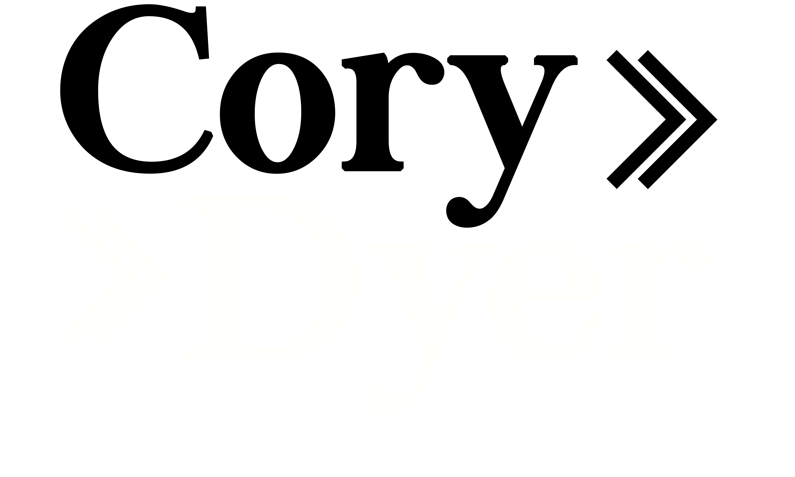

An extremely driven and creative individual. I am looking for an engineering internship over the 2020/2021 summer period, to finish the second year of my Mechatronics degree at Massey University. Highly proficient in problem solving and the engineering process, with several years experience in robotics. With knowledge of multiple coding languages, circuit design, CAD software and report writing. Having assisted in many volunteering projects along with scattered periods of work, I am committed to learning as much as possible and giving everything I have to any project, work or challenge I am given.

Contact Me:
cjdyer0@gmail.com
0223099151
Cory Dyer
Curriculum vitae
Below are a few of my highlights.
1 / 11
.png)
All New Zeland Vex Robotics Teams 2018
2 / 11
.png)
Canteen Summer Camp
3 / 11
.png)
2019 Excellence Award
4 / 11
.png)
Wire Master Logo
5 / 11
.png)
Coil Winding User Interface
6 / 11
.png)
College Leaver Awards
7 / 11
.png)
Component Topology Optimization
8 / 11
.png)
2019 Robot on Game Field
9 / 11
.png)
Coil Winding Result
10 / 11
.png)
Robot Hand CAD (Palm pictured)
11 / 11
.png)
Vex Worlds Venue
Robotics
Promoting and Mentoring
2020 has been my first year of being unable to compete in the Vex robotics competition (due to age). Because of this I was able to put my full effort into mentoring teams and promoting robotics. During the university year I would mentor teams in Palmerston North, most notably, Palmerston North Girls' High School and St. Peters. To promote robotics in the region, I would assist in running the Vex EDR portion of scrimmages, help teams and most importantly talk to local parents and teachers in attendance. This mentoring also extended to teams in the Bay of Plenty region when home from university. I was also able to mentor teams in 2019, along with my own club in years prior.

Competing
I have been active in New Zealand robotics for nearly 8 years, beginning at Otumoetai Intermediate with Lego NXT and moving into Vex EDR at Otumoetai college. Through robotics I was able to pickup a strong knowledge in coding, building and communication. The following videos and pictures are highlights through my years participating.
2018 Worlds 2016 Worlds

History
2020
WireMaster, A coil winding system.
As part of my university course I was given a semester to work in a team and create a coil winding system. This allowed me to further my skills in teamwork, rapid prototyping and designing to set constraints. Early on in the project I made sure to promote the idea of simple design, allowing my team to focus wholly on creating a tight, precise coil, without worrying about complex concepts. Additionally I pushed for strong project management, thus providing the team with a more structured process and therefore focusing the scope of the problem being solved.

Hou, Designing for an existing company.
The first semester of 2020 was unfortunately shortened due to the COVID-19 virus and is therefore less in-depth than the second semester project. However, my team was still able to complete a report and final idea. We communicated with a representative at Methven to create a saleable product. The final idea was an adjustable showerhead from the bottom of the rail, this is aimed at assisting the elderly and streamlining the shower experience.
Coffee n’ Cream, Creating content for a business.
In August of 2020 I was approached by the owner of a coffee-cart to create a website and potential logo design. This allowed me to grow my knowledge of working with real people, and achieving the vision they have.

Work experience.
Over the 2019/2020 summer break I worked full time as a storehand at NZ Uniforms. This provided me with valuable real world work experience and enabled me to increase my communication skills. I also worked during the advance voting period of the 2020 elections. Adding further development to my communication skills.
2019
University projects.
In comparison to the second year, the first year projects were heavily limited in scope and ability to think outside of the box. These projects ensured I had a firm understanding of the engineering process before getting into more advanced projects. As we could not yet select our teams amongst ourselves, this provided a range of different views. I took leadership positions in both semesters teams and focused on applying people to the areas they had strengths in. Allowing my teams to complete projects much faster and more efficiently than other teams.

Sygn and Ecoceipt.
During 2019 I was able to be involved in two large coding projects. The first of which, Sygn, was a multipurpose artificial intelligence framework. Sygn began as a side project during robotics to reduce the amount of time coding simple components. This was then developed in 2019 to be used on different platforms and applications, so far I have been able to use Sygn for computer vision, complex pathing and performance analysis. This year also introduced me to iOS/Android app development, through the Ecoceipt project. For Ecocept I was able to create a windows application communicating through a server (local or web based) to a phone app. This project also involved modifying a unique piece of hardware for NFC communication between the phone and PC.

Work experience
As in the year to come, I began the year by working for NZ Uniforms as a storehand over the summer holidays. Being in my first year of university I did not focus on finding additional work throughout the year.